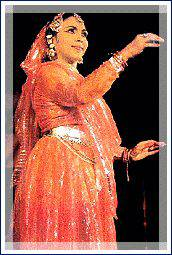
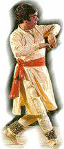

In the final part of her series on Indian classical dance forms, Mrs Gouri Menon narrates the rhythmic movements and sounds that make Kathak an enthralling feast for spectators' senses.

India's ancient cultural heritage is unique in its richness and complexity. Virtually every region has a variety of performing arts - songs, dramas and dances, to express man's many moods, his joys, sorrows, dreams and ambitions, and expression of human desire to re-discover our tradition and culture. The rhythm of the drum, the tinkling bells on the dancing feet and the plaintive singing voice may be elaborating the pangs of separation or the joys of reunion, have all been integral part of the Indian psyche. Luckily there has been a re-awakening since the late thirties and the performing arts have gradually become vital and flourishing. The result is arts like Kathakali and Bharathanatyam gained popularity internationally.
Kathakali, Bharathanatyam, Mohiniyattam, Manipuri, Odissi, Kuchipudi and Kathak are regarded as art dances or classical dances on account of their sophisticated stylisation. Each has a link with antiquity, literature, sculpture and musical traditions of the ancient and medieval India - of course the influence of each particular region affecting it as well. However in all dances, the principles enunciated by the great sage Bharatha are adhered to, namely, the division of dance into Nrita (pure or abstract), Nritya (dance with mime or Abhinaya) of Thandava and Lasya of styled presentation (Natyadharmi). At the same time the technique of movement in each style is distinctive.
 Kathak, hailing from northern India, is an Urban sophisticated style full of virtuosity and intricate craftsmanship. It is generally identified with the court traditions of the later Nawabs of northern India, but, in reality Kathak is an amalgam of several folk dances - the traditional dance drama forms prevalent in the temples of Mathura of Brindavan, known as the Krishna-Radha lilas as well as the sophistication of the court tradition of later years. Though its origins are old, its present format is new.
The present form is attributed to the genius of Nawab Wajid Ali Shah and to the hereditary musician dancer Pandit Thakar Prasadji. The contemporary repertoire was evolved by a few families of traditional dancers in the last hundred years.
In technique, Kathak is two dimensional - always following a vertical position - no breaks - no deflections. It is the most important part of the footwork. Innumerable rhythmic patterns with varying emphasis are to be mastered and the result is that the hundred odd ankle bells produce a fantastic range of sound and rhythm.
Straight walks, gliding movement, fast pirouettes (the spinning movement of the body while being balanced either on the tip of the toe or on the ball of the foot), changing tempo, the pace ofmovement and meterical patterns constitute the beauty and dexterity of this very special art dance. The pure dance sequences comprise units (tukra) akin to adavu in Bharathanatyam, arasa in Odissi and kalasam in Kathakali.
As in other dances the performer begins with an invocation either to a particular divine form (Ganesh etc.) or to the chief patron in the audience. Amad and salam is the first item. The next item is an exposition of slow delicate movements of the eyebrows, eyes, lateral neck and shoulder movements. Tukra and toras follow presentation of phrases of rhythmic patterns. Time cycles are repeated, giving complexity to it.
Pirouettes arranged in groups of three, six, nine, twelve etc. generally mark a finale. Pure dance (Nrita) sections are followed by short interpretative pieces performed to a repetitive melodic line, while mime (Abhinaya) is performed to lyrics in Hindi and Brajbhasha, both tongues well known to villagers and urban dwellers alike. In Nrita, the dancer is at liberty to improvise. A healthy competition with the percussionist is common. While in mime, the range of improvisation on the poetic line is the test of a dancer's talent.
Accompaniment comprises a vocalist, a percussionist (instrument being a Pakkaraj or tabalas - pair of drums), an instrumentalist who plays the repetitive melodic lines, nagina (other musical instruments are optional) for embellishment.
Works of famous dancers like Uday Shankar did not leave the traditional dancers unaffected. Their aim was to compose dance first, music following - creating ballets like Ramayana and Panchathantra. Theme is old, but conception and treatment new. Imitating Uday Shankar's way, the modern trend seems to be to let the theme be rooted in tradition and allow refreshing departures and innovations in other sections.